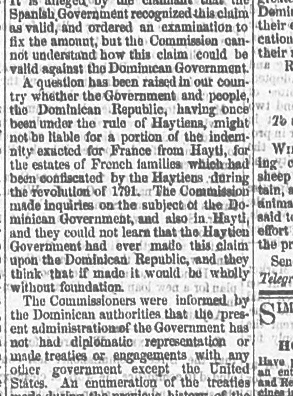
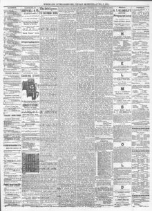

THE WEST INDIES. Mr. Wade's Party at Play in San Domingo.LAS INDIAS OCCIDENTALES. La partida del Sr. Wade de recreo en San Domingo.
The Wheeling Daily Intelligencer. Wheeling, W. Va., April 7, 1871. Page 3. View the originalVer el original


See the full pageVer la página completaAccording to the newspaper, Dominican authorities informed the Commissioners that their current administration has had no diplomatic representation, treaties, or engagements with any government except the United States. The Commissioners also found that undisputed Dominican territory spans 22,212 square miles, with about 1,000 square miles formerly involved in disputes with Hayti. Additionally, after examining government and municipal grants, including records in Samana, the Commissioners found no truth to rumors that land concessions or grants had been made to officials of the Government or the United States during the negotiation of the 1869 annexation treaty.Según el diario, las autoridades dominicanas manifestaron a los comisionados que la administración en funciones carecía de representaciones diplomáticas, alianzas o compromisos con nación alguna fuera de los Estados Unidos. Los comisionados determinaron igualmente que el territorio dominicano incontestado comprendía 22.212 millas cuadradas, con cerca de 1.000 millas cuadradas sujetas antiguamente a diferendos con Haití. Asimismo, tras registrar los archivos oficiales y municipales, incluidos los protocolos de Samaná, la comisión constató la total falsedad de las imputaciones sobre concesiones de tierras otorgadas a dignatarios del gobierno dominicano o de los Estados Unidos durante la negociación del tratado de anexión de 1869.
FULL TEXT:TEXTO COMPLETO:
The following statement of receipts for 1870 is here presented, in order to give, as far as possible, a complete view of the financial condition of the Dominican Republic: Resume of the income of the Government for 1870: First, Customs receipts, tonnage, $2,730,660; entrance fees, $147,995; light houses, $67,901; anchorage, $196,995; pilotage, $142,827; lighterage, $21,800; interpreter, $640 26; signal men, $59,410; quarantine, $48,016; wharfage, $679,888; recargo municipal, $110,586; recargo for steamer, $588,014; water, $24,100; impost dues, $691,393 64; export dues, $71,419 20; coast fees, $7,511 11.La siguiente exposición de ingresos para 1870 se presenta aquí, con el fin de dar, en lo posible, una visión completa de la condición financiera de la República Dominicana: Resumen de los ingresos del Gobierno para 1870: Primero, Ingresos de aduanas, tonelaje, $2,730,660; derechos de entrada, $147,995; faros, $67,901; fondeo, $196,995; pilotaje, $142,827; lanchaje, $21,800; intérprete, $640 26; vigías, $59,410; cuarentena, $48,016; muellaje, $679,888; recargo municipal, $110,586; recargo por vapor, $588,014; agua, $24,100; derechos de impuesto, $691,393 64; derechos de exportación, $71,419 20; derechos de costa, $7,511 11.
The Commissioners believe that the statement of the public debt given above includes all the indebtedness or obligations for which the Dominican Republic is in any degree liable, as well as that which it considers valid and binding, as that which it regards as unfounded or overstated by the claimants. Throughout the inquiry it was urged upon the Dominican authorities that every claim known to exist, of whatever character, should be exhibited to the Commission, whose object was not to determine the precise amount that was justly due and binding, but to get at the bottom and find the utmost limit of their obligations, and setting forth everything for which the Government could under any circumstances be made liable. The above account contains much that the Dominican Government believes to be partially or wholly groundless, and some which upon the inspection will appear questionable. Among the pending claims is one of President Baez for the destruction of property. It is alleged by the claimant that the Spanish Government recognized this claim as valid, and ordered an examination to fix the amount, but the Commission cannot understand how this claim could be valid against the Dominican Government.Los Comisionados creen que la exposición de la deuda pública dada arriba incluye toda la deuda u obligaciones por las cuales la República Dominicana es en grado alguno responsable, tanto aquella que considera válida y obligatoria, como aquella que considera infundada o exagerada por los reclamantes. A lo largo de la investigación se urgió a las autoridades dominicanas que toda reclamación conocida, de cualquier carácter, debía exhibirse a la Comisión, cuyo objeto no era determinar la cantidad precisa que era justamente debida y obligatoria, sino llegar al fondo y encontrar el límite máximo de sus obligaciones, y exponer todo aquello por lo que el Gobierno pudiera bajo cualquier circunstancia ser hecho responsable. La cuenta anterior contiene mucho que el Gobierno dominicano cree parcial o totalmente infundado, y algo que a la inspección parecerá cuestionable. Entre las reclamaciones pendientes hay una del presidente Báez por la destrucción de propiedad. El reclamante alega que el Gobierno español reconoció esta reclamación como válida, y ordenó un examen para fijar la cantidad, pero la Comisión no puede comprender cómo esta reclamación podría ser válida contra el Gobierno dominicano.
A question has been raised in our country whether the Government and people of the Dominican Republic, having once been under the rule of Haytiens, might not be liable for a portion of the indemnity exacted for France from Hayti, for the estates of French families which had been confiscated by the Haytiens during the revolution of 1791. The Commission made inquiries on the subject of the Dominican Government, and also in Hayti, and they could not learn that the Haytien Government had ever made this claim upon the Dominican Republic, and they think that if made it would be wholly without foundation.Se ha planteado una cuestión en nuestro país sobre si el Gobierno y el pueblo de la República Dominicana, habiendo estado una vez bajo el dominio de los haitianos, podrían no ser responsables de una porción de la indemnización exigida de Francia por Haití, por las propiedades de familias francesas que habían sido confiscadas por los haitianos durante la revolución de 1791. La Comisión hizo averiguaciones sobre el tema al Gobierno dominicano, y también en Haití, y no pudo saber que el Gobierno haitiano hubiera jamás hecho esta reclamación a la República Dominicana, y cree que si se hiciera sería totalmente infundada.
The Commissioners were informed by the Dominican authorities that the present administration of the Government has not had diplomatic representation or made treaties or engagements with any other government except the United States. An enumeration of the treaties made during the previous history of the Republic of France, Great Britain, and other powers, will be found in Ex. Doc. 17, Forty-first Congress, second session. They are mostly treaties of navigation and commerce, and contain no unusual provision requiring notice here.Los Comisionados fueron informados por las autoridades dominicanas de que la presente administración del Gobierno no ha tenido representación diplomática ni ha hecho tratados ni compromisos con ningún otro gobierno excepto los Estados Unidos. Una enumeración de los tratados hechos durante la historia anterior de la República con Francia, Gran Bretaña, y otras potencias, se encontrará en el Doc. Ej. 17, Cuadragésimo primer Congreso, segunda sesión. Son en su mayoría tratados de navegación y comercio, y no contienen ninguna disposición inusual que requiera mención aquí.
The extent of undisputed Dominican territory is 22,212 square miles, the portion of which has been formerly involved in dispute with Hayti being about 1,000 square miles.La extensión del territorio dominicano indiscutido es de 22,212 millas cuadradas, siendo la porción que anteriormente ha estado en disputa con Haití de unas 1,000 millas cuadradas.